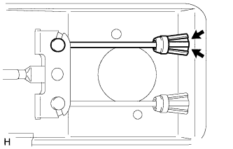
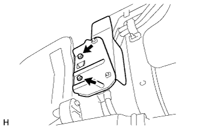
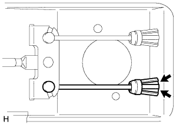
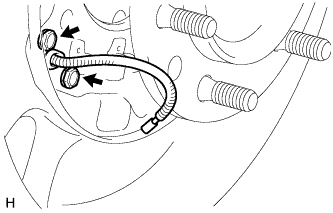

ТРОС ПРИВОДА СТОЯНОЧНОГО ТОРМОЗА > СНЯТИЕ |
| 1. ОТСОЕДИНИТЕ КОЛОДКУ СТОЯНОЧНОГО ТОРМОЗА № 2 В СБОРЕ С РЫЧАГОМ ПРИВОДА КОЛОДОК СТОЯНОЧНОГО ТОРМОЗА |
| 2. СНИМИТЕ ТОПЛИВНЫЙ БАК |
Для моделей с 1GR-FE:
Снимите топливный бак в сборе (Нажмите здесь).
Для 3-дверных моделей с 1KD-FTV:
Снимите топливный бак в сборе (Нажмите здесь).
Для 5-дверных моделей с 1KD-FTV:
Снимите топливный бак в сборе (Нажмите здесь).
Для 3-дверных моделей с 2TR-FE:
Снимите топливный бак в сборе (Нажмите здесь).
Для 5-дверных моделей с 2TR-FE:
Снимите топливный бак в сборе (Нажмите здесь).
Для моделей с 5L-E:
Снимите топливный бак в сборе (Нажмите здесь).
| 3. СНИМИТЕ ЦЕНТРАЛЬНУЮ ВЫПУСКНУЮ ТРУБУ В СБОРЕ (для 3-дверных моделей) |
Для моделей с 1KD-FTV:
Снимите центральную выпускную трубу (Нажмите здесь).
Для моделей с 2TR-FE:
Снимите центральную выпускную трубу (Нажмите здесь).
| 4. СНИМИТЕ ВЕЩЕВОЙ ЯЩИК В ОБЛИЦОВКЕ ТУННЕЛЯ ПОЛА В СБОРЕ |
Для моделей с автоматической трансмиссией:
Снимите вещевой ящик в облицовке туннеля пола в сборе (Нажмите здесь).
Для моделей с механической трансмиссией:
Снимите вещевой ящик в облицовке туннеля пола в сборе (Нажмите здесь).
Для моделей с холодильной камерой:
Снимите вещевой ящик в облицовке туннеля пола в сборе (Нажмите здесь).
| 5. СНИМИТЕ ТРОС ПРИВОДА СТОЯНОЧНОГО ТОРМОЗА № 2 В СБОРЕ |
 |
Ослабьте регулировочную гайку.
Отсоедините трос привода стояночного тормоза № 2 от тяги привода стояночного тормоза № 1.
|  |
Сожмите захваты троса привода стояночного тормоза № 2 и слегка протолкните трос наружу автомобиля.
 |
Выверните 2 болта и отсоедините трос привода стояночного тормоза № 2 в сборе от опорного диска.
Для 3-дверных моделей:
Выверните 2 болта, отверните 3 гайки и снимите трос привода стояночного тормоза № 2.

| *1 | Зажим троса привода стояночного тормоза № 1 | *2 | Зажим троса привода стояночного тормоза № 3 |
Отсоедините зажим троса привода стояночного тормоза № 1 от троса привода стояночного тормоза № 2.
Отсоедините зажим троса привода стояночного тормоза № 3 от кузова.
Для 5-дверных моделей:
|  |
Снимите теплозащитный экран троса привода стояночного тормоза № 1.
Выверните 5 болтов и снимите трос привода стояночного тормоза № 2.
| *1 | Зажим троса привода стояночного тормоза № 2 | - | - |
Отсоедините зажим троса привода стояночного тормоза № 2 от троса привода стояночного тормоза № 2.
| 6. СНИМИТЕ ТРОС ПРИВОДА СТОЯНОЧНОГО ТОРМОЗА № 3 В СБОРЕ |
|
Ослабьте регулировочную гайку.
Отсоедините трос привода стояночного тормоза № 3 от тяги привода стояночного тормоза № 1.
|  |
Сожмите захваты троса привода стояночного тормоза № 3 и слегка протолкните трос наружу автомобиля.
|  |
Выверните 2 болта и отсоедините трос привода стояночного тормоза № 3 в сборе от опорного диска.
Для 3-дверных моделей:
| *1 | Зажим троса привода стояночного тормоза № 2 | *2 | Зажим троса привода стояночного тормоза № 4 |
Выверните 2 болта, отверните 3 гайки и снимите трос привода стояночного тормоза № 3.
Отсоедините зажим троса привода стояночного тормоза № 2 от троса привода стояночного тормоза № 3.
Отсоедините зажим троса привода стояночного тормоза № 4 от кузова.
Для 5-дверных моделей:
| *1 | Зажим троса привода стояночного тормоза № 3 | *2 | - |
Выверните 4 болта и снимите трос привода стояночного тормоза № 3.
Отсоедините зажим троса привода стояночного тормоза № 3 от троса привода стояночного тормоза № 3.